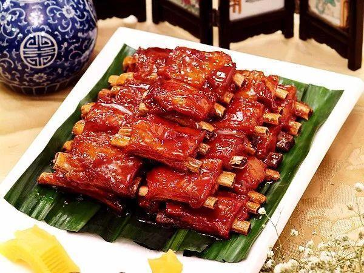

Fried Spare Ribs, Wuxi Style
- Recipe NameFried Spare Ribs, Wuxi Style
- Description
Fried Spare Ribs, Wuxi Style is a traditional dish in Xiangtan, Hunan Province.
- LevelHigh
- Time Needed20min
- Main IngredientPork ribs (large ribs) 5000 g
- Auxiliary IngredientStarch (pea) 700g, wheat flour 1250g, egg 500g
- Process
1. Choose fresh pork ribs and cartilage (with 2 kilograms of meat per kilogram of bone).
2. Chop and marinate: Chop the ribs into 3 cm square pieces, wash with clean water, remove and drain the water. Chop the green onion and ginger into minced pieces, pour them into the container and mix well together with other condiments, then pour the ribs into the bowl and mix well, and marinate for 30 minutes.
3. Paste and deep-fry: Use 500 grams of water to stir starch, flour, and eggs into a dry paste. Pour the marinated ribs together with the condiments into the paste, and stir evenly with a wooden stick. Heat the oil to 180°C, pour into the ribs, pay attention to deep fry, about 10 minutes later, the surface of the ribs will be dark yellow and remove, it is the finished product..